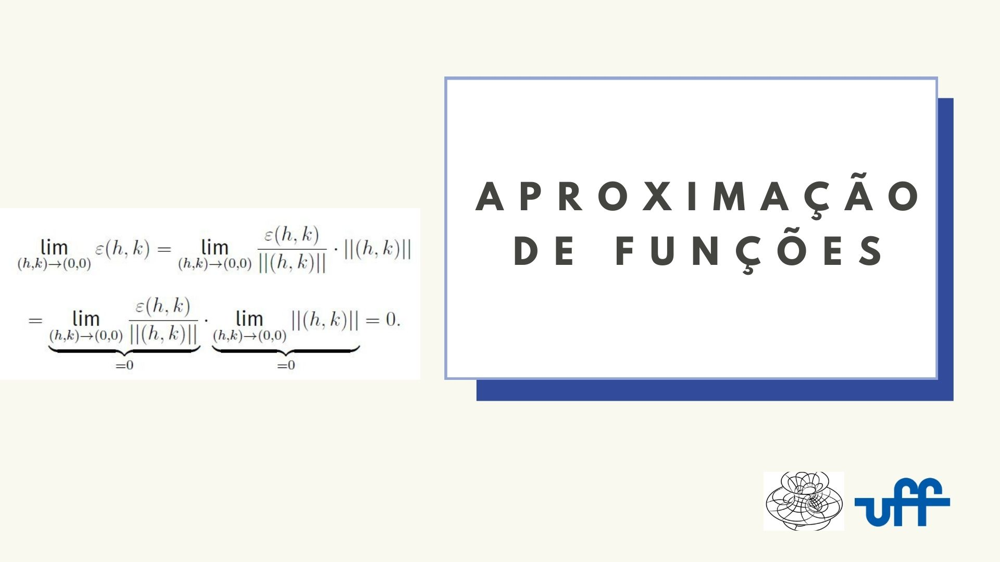
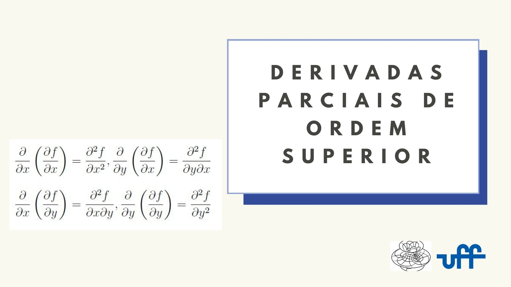
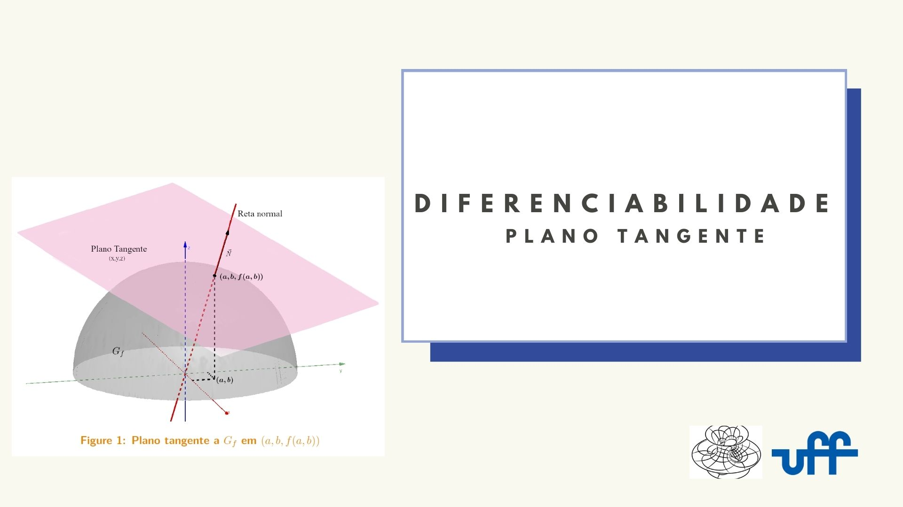
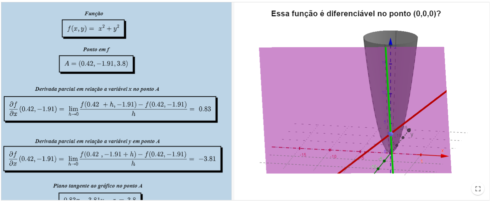
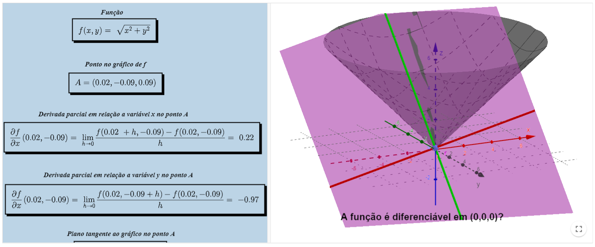
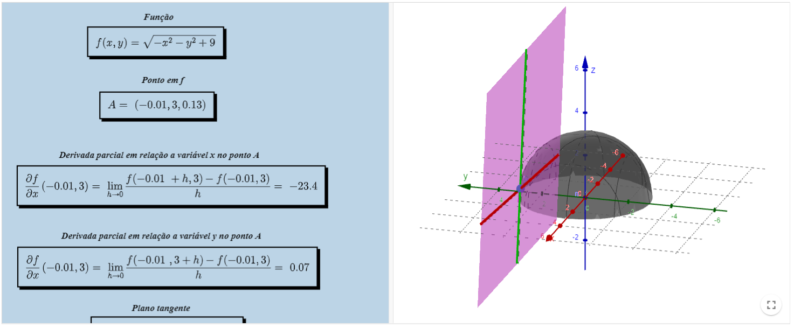
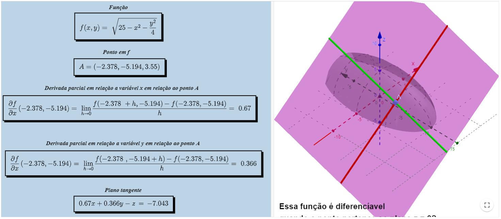
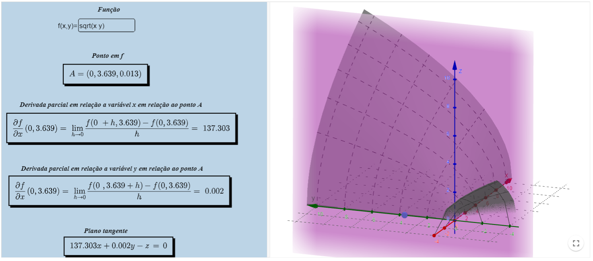

Funções escalares de várias variáveis
Diferenciabilidade
texto de introdução
Caderno base da matéria
Clique na imagem abaixo para acessar o texto da disciplina:



Vídeoaulas
- Assista o vídeo sobre Diferenciabilidade I
- Assista o vídeo sobre Diferenciabilidade II
- Assista o vídeo sobre Diferenciabilidade III
- Assista o vídeo diferenciabilidade vs continuidade
- Assista o vídeo sobre Plano tangente e reta normal - Teoria
- Assista o vídeo sobre Plano tangente e reta normal - Exercícios
- Assista o vídeo sobre Aproximação afim e diferencial - Teoria
- Assista o vídeo sobre Aproximação afim e diferencial - Exercícios
Exemplos
...
Recursos computacionais
Plano Tangente - Applet 1
Livro Geogebra

Plano Tangente - Applet 2
Livro Geogebra

Plano Tangente - Applet 3
Livro Geogebra

Plano Tangente - Applet 4
Livro Geogebra

Plano Tangente - Applet 5
Livro Geogebra
